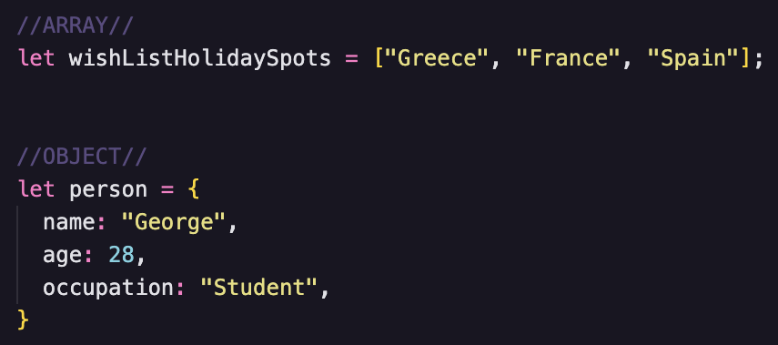

JS Fundamentals
An analogy to describe JavaScript and its relationship to HTML and CSS.
For this im going to use the classic building analogy and not because everyone else does, but because I think personally most people come to think of this analogy when they first encounter all 3 of these languages, I know I did. Most websites are made up of Html, Css and Javascript. Lets first talk about each one. Html stands for Hypertext Markup Language, think of html as the building structure, how many bedrooms, how many floors etc. It is the structure of a website, or in this case the building. Css stands for Cascading Style Sheet. Style, buildings can have style right. What fancy coloured bricks does the building have, does it even have bricks, maybe its all just glass...see where im going with this. Css is how we style an html page, give it its nice wallpapers, fonts etc. Now Javascript, how does it relate to Html and Css. Javascript controls the functionality of a website, or in this case the building. Like turning the lights on in the building so you can see at night. Clicking a button that then changes the website to dark mode, thats all controlled by Javascript. Javascript has the ability to interact with Html and Css and manipulate there code all from a click of a button.
Control flow and Loops
Control flow is the order in which code executes. This is true for Javascript, Html and Css, hence the reason Css stands for cascading style sheets, as the code trickles down and is executed from top to bottom. There are lines of code that can change the flow, statements like functions, conditionals and loops are just some examples. Conditionals are statements which are executed only if the outcome reads true, otherwise the next line of code is run. For example. You wake up and go to make a coffee in the morning, do you like milk in your coffee and is it available? If yes, then make a coffee with milk. But let’s say there isn’t any milk. Are there alternatives. This is how a condition statement reads back. If there is no milk, but you still like coffee even without milk, then make a coffee without milk and if that isn’t the case and you absolutely cannot have coffee without milk, then maybe the last line of code for this statement in this analogy would be to go and get some or don’t have a coffee at all. Statements like conditionals are determined like this, if the first result does not equal true, it flows down until the result can be finalised.
Loops are a bit different. They loop over code over and over as long as the result is true, and keep looping until there is nothing left to loop over or if the condition becomes false. Say you have a nice full water bottle for you to drink from throughout the day, this would be the start of the loop. You continually take sips from this water throughout the day because there is still water in the bottle available and you’re a thirsty human who likes to make sure you stay hydrated. It’s only when the bottle is full depleted of water, that you cannot take any more sips from it that the loop will finally come to an end.
What the DOM is and an example of how you might interact with it
The DOM stands for document object model. It is an object model and programming interface. For programming languages like Javascript, to exist and function, there must be some sort of structure for it to manipulate, the DOM is that structure and it allows us to then use Javascript to add/remove and change elements and many more cool things. The DOM structure of an html page can be laid out like a tree.

This tree like structure is what javascript plays with. Lets go over an example of how Javascript can manipulate the dom.


The code in the above image is for a simple heading in an HTML page saying Hello World as you can see in the image beside it, aswell as a button called Change to Hello User. This button is connected to the heading through Javascript with its ability to manipulate the DOM and is ready to manipulate the inner text of the heading with a simple click of the button. Lets look at the Javascript code below and what the heading will look like after we click the button.


What is this Javascript code doing exactly. First its grabbing the button in html by its id(refer html code in the previous example) and storing it as a variable called button. The javascript in the next line of code below has an event listener attached to the variable button. The javascript is now listening for a click of the button to then initiate a function that will change the inner text of the heading. After a user clicks the button, the heading text is changed from Hello World to Hello User as you can see in the picture beside it. This is just a simple example how how Javascript can interact with the DOM. It adds user interaction to a page through such coding. This leads us to the next question below
What functions are and why they are helpful.
Functions are a block of code that performs a task. Once a function has been made, it can be called whenever a programmer needs it. In the example above we used a function to perform the task of changing the inner text of the heading. This function was made within the event listener so it is only relevent to that particular event. Functions can be made and called outside of this though. Functions can be written to take inputs aka parameters. The function can then use these parameters for executing the code. Lets take a look at a function below.

In this example the function is created and called addNumbersTogether and within the () it takes in two parameters a and b. Within the function, the content within the curly braces {} this is what the function is going to do, its going to return to us the value of a and b added together. Now that the function has been defined, it must be called. For this we are using the console.log. If you want to learn more about what console.log click HERE and have a read. We are using this method just to call our function to see it do its magic. Now we are simply calling the function by its name addNumbersTogether() and as you can see within the () we have added in our parameters for a and b which in this case are the numbers 100 and 9. The end result for this function is then shown at the bottom. A very basic example. I used console.log for this example just to show the function in action. If we wanted to call this function within our javascript we would simply just need to write addNumbersTogether(100, 9). Lastly, functions do not need to have parameters, they are entirely optional depending on what the programmer needs the function to do.
The difference between accessing data from arrays and objects.
Arrays and objects both store data. Arrays store a list of values which can be changed. Objects store more of a collection of data, not just single values. Objects can also be changed to. Have a look below at the array(top) and the object(bottom).
Arrays are a way to store multiple data types in a variable. They can be more then just string values like in the example above, they can also be numbers, booleans, objects and even arrays within an array which is pretty cool to think about. Arrays use indexing starting the count at 0. For this example if we wanted to access the first value in the array wishListHolidaySpots we would have to declare the variable and follow it with the index number of the value we want to access, so to access Greece we would write wishListHolidaySpots[0]. When we are using the square brackets [], we are telling javascript what value in the array we wish to access. If we wanted Spain we would use index [2].
Objects are ways to represent something in code. They have a key and a value, those are there true names but you can think of it like a property of that object and a type of the property. They are different from arrays as they do not use indexing, just key and value pairs. In this example we have the object person, with a key of occupation and a value of student. If we wanted to access the persons occupation we would simply use dot notation. For this example, its person.occupation.